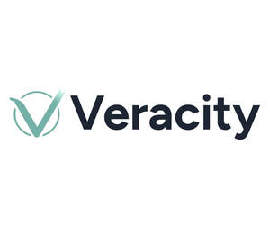

Trade Mark Journal No.2026/008 20 February 2026
UK00004305737 4 December 2025 (9,35,42,45)

- Class 9
- Software, application software, software platforms and software tools relating to improving productivity, integration with proprietary data, streamlining repetitive tasks, enhancing editorial review processes, ensuring publication accuracy, streamlining processes and workflows for verifications, data accuracy, data integrity, data verification services, peer review verification, fact checking, credibility checking, citation checking, publishing, editing, data organisation, computerised data processing, data structuring, data systemisation, data searching, data retrieval, data management, analysis of data, reporting of business data, business statistical information services, summaries of business information, compilation of business data, dissemination of business data, business reporting, business insights, business efficiency, business research, business information and business advice.
- Class 35
- Data verification services including peer review verification services, fact checking, credibility checking and citation checking; data organisation; computerised data processing, data structuring and systemisation, searching, retrieval and management; analysis and reporting of business data; business statistical information services; providing summaries of business information; compilation and dissemination of business data; business reporting and insights; business efficiency, research, information and advice; Business research and data analysis services in the field of [citation and information verification]; Business research services in the field of [citation and information verification]; Business data analysis services in the field of [citation and information verification].
- Class 42
- Software as a service [SaaS] and Platform as a service [PaaS] featuring software relating to improving productivity, integration with proprietary data, streamlining repetitive tasks, enhancing editorial review processes, ensuring publication accuracy, streamlining processes and workflows for verifications, data accuracy, data integrity, data verification services, peer review verification, fact checking, credibility checking, citation checking, publishing, editing, data organisation, computerised data processing, data structuring, data systemisation, data searching, data retrieval, data management, analysis of data, reporting of business data, business statistical information services, summaries of business information, compilation of business data, dissemination of business data, business reporting, business insights, business efficiency, business research, business information and business advice; Providing scientific research information; Providing a website featuring non-downloadable software using artificial intelligence (AI) for [verification of citations and information]; Providing temporary use of on-line non-downloadable cloud computing software using artificial intelligence (AI) for [verification of citations and information]; Providing on-line non-downloadable software using artificial intelligence (AI) for [verification of citations and information]; Providing temporary use of on-line non-downloadable software and applications using artificial intelligence (AI) for [verification of citations and information]; Software as a service (SAAS) services featuring software using artificial intelligence (AI) for [verification of citations and information]; Artificial intelligence as a service (AIAAS) services featuring software using artificial intelligence (AI) for [verification of citations and information]; Providing temporary use of online non-downloadable software using artificial intelligence (AI) for automating [verification of citations and information]; Providing online non-downloadable computer software platforms for [verification of citations and information]; Application service provider featuring application programming interface (API) software for [citation and information verification]; design, development, creation, installation, testing and maintenance of software and software tools relating to all of the aforesaid.
- Class 45
- Providing legal research in the field of citation and information verification; Legal research services; Provision of legal research services; Providing legal research services.
Grounded AI Ltd
Representative: Withers LLP